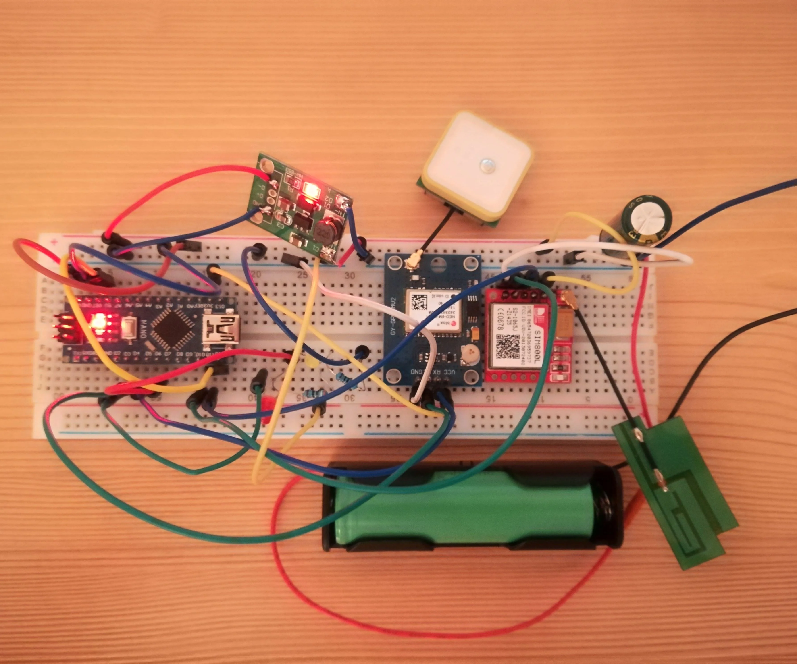

IITTNiF CHANAKYA Internship Program, IITT-NiF
[Oct 2022 - Dec 2022]
During my internship at the CHANAKYA Internship Program, IITT-NiF, I developed an IoT-based bus tracking system to enhance the efficiency and safety of college shuttle services across the IIT Tirupati campus. The project aimed to provide real-time location updates and estimated time of arrival (ETA) for campus buses, ensuring students and staff could plan their commutes more effectively.
Key Responsibilities & Achievements:
- IoT Integration: Designed and implemented a system using Arduino Uno, SIM800L GSM, and Neo 6M GPS modules to capture and transmit real-time location data of shuttle buses.
- Cloud Connectivity: Utilized Thinkspeak cloud and IFTTT for real-time data storage, visualization, and notifications, enabling historical data analysis and enhanced monitoring.
- Mobile Application: Developed an Android app interface to visualize live bus locations and ETAs, improving user experience and accessibility.
- Safety Features: Incorporated speed alerts to notify drivers and administrators of over-speeding, promoting safer transportation.
- 3D Printing: Designed and fabricated custom enclosures for the hardware modules using 3D printing, ensuring durability and ease of installation on buses.
- System Reliability: Ensured robust data transmission and minimal latency for accurate, real-time updates.
Technical Highlights:
- Integrated Neo 6M GPS module for precise geolocation and SIM800L GSM module for reliable data communication with the cloud.
- Leveraged Thinkspeak cloud for real-time data storage, visualization, and analytics.
- Implemented IFTTT for automated notifications and event-based actions, such as speed alerts and arrival notifications.
- Designed user-friendly UI for the Android app, allowing users to view bus routes, current locations, and ETAs.
- Used 3D printing to create robust and compact hardware enclosures for field deployment.
Impact:
The IoT-based bus tracking system significantly improved the transparency and reliability of campus shuttle services. Real-time tracking and automated alerts enhanced commuter safety and convenience, while cloud-based data storage enabled better management and analysis of shuttle operations. The project demonstrated the practical application of IoT technologies, cloud integration, and rapid prototyping in solving real-world transportation challenges within a campus environment.
